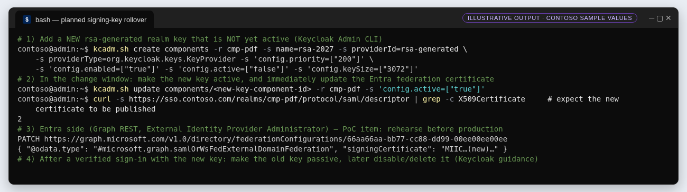

G9 · Operate: key rollover, backups, monitoring and incidents
Keep the federation healthy after go-live: a coordinated certificate cutover, backups that restore, the signals to watch, and a fast revocation path.
Planned signing-key rollover#
Entra's SAML/WS-Fed federation stores one signing certificate. With a metadata URL Entra renews it automatically near expiry — trying 30 days before, then daily (Learn) — but if the IdP rotates before expiry, you must update Entra manually (Learn). Keycloak switches signatures to the highest-priority active key as soon as it is active (Keycloak: rotating keys). So a planned rotation is a coordinated cutover:
- 1Prepare
Add a new
rsa-generatedkey with higher priority but inactive. Note its certificate (Realm settings › Keys). - 2Cut over in a change window
Activate the new key and immediately update the Entra federation certificate (admin center Edit, or Graph PATCH of
signingCertificateas an External Identity Provider Administrator). - 3Prove
Run T4 (G8) with a test guest; confirm the response's signature verifies with the new certificate.
- 4Retire
Make the old key passive, then disable/delete it after the overlap period Keycloak recommends (one to two months) (Keycloak).


Not yet rehearsed in the PoC. In particular, confirm how the Entra admin center and Graph behave when the metadata temporarily publishes two certificates — the G3 validator deliberately refuses metadata with more than one signing certificate so that a rollover is reviewed, not guessed.
Backups and recovery#
- Back up both PostgreSQL databases (
keycloak,cmp) consistently; the PoC has no backup job — define pg_dump or physical backups with WAL archiving, retention and restore tests. - Keycloak notes that admin-console exports are not suitable for backups; only boot-time exports are (Keycloak).
- Preserve
.azurestate files and DPAPI credential stores; recovery is inspected, never 'delete state and redeploy'. - Record the federation values (issuer, certificate thumbprint, metadata URL) so Entra can be re-pointed after a rebuild.
Patching and change control#
- Keycloak image is pinned by version and digest; upgrades change
sso-keycloak.py, which changes the bootstrap hash the deployment guards — that is intentional maintenance, not drift. - Patch Ubuntu, Docker and Caddy in maintenance windows; the Caddy certificate renews through ACME on port 80/443.
- Reconcile network IaC after any manual fix (the PoC's subnet NSG repair) so automation does not undo it.
Monitoring#
| Signal | Source | Alert on |
|---|---|---|
| Guest sign-in failures | Entra sign-in logs | Spikes of federation errors (e.g. AADSTS5000819), CA failures |
| Federation configuration changes | Entra audit logs | Any change to the SAML/WS-Fed IdP |
| Keycloak login errors | Keycloak events | LOGIN_ERROR rate; brute-force lockouts |
| Certificate expiry | Keycloak realm keys + Entra IdP list | < 60 days on any signing or TLS certificate |
| Availability | HTTPS probe on discovery + metadata URL | Non-200 or issuer mismatch |
Incident: revoke access fast#
- Disable the Keycloak user and revoke its Keycloak sessions (CMP Users page → disable + revoke).
- Block sign-in for the guest in Entra and revoke its sessions; remove group membership and role assignments.
- If the realm signing key may be compromised: generate a new key, remove the compromised one and update Entra's certificate — Keycloak describes the key-compromise procedure (Keycloak).